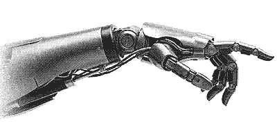
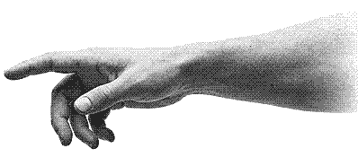

Agência de webdesign e automações
Quem te procura consegue te ver?
Site, Google, redes sociais e WhatsApp: pra quem te acha virar cliente.

Trabalhamos com Clínicas. Barbearias. Salões. Academias. Oficinas. Lojas. Você.
Design para redes sociais
Post que faz parar de rolar.
Posts, carrosséis e stories com a cara do seu negócio. Você só posta.
Exemplo de carrossel pro Instagram de uma clínica: a capa "3 sinais de que tá na hora do check-up", um slide pra cada sinal e o último chamando pro WhatsApp.
Achamos onde o cliente desiste. Fazemos com a sua marca. Você vê pronto, no seu celular.


Automatização para o seu negócio. Seu negócio com atendimento 24h, sem descanso.
Automação no seu negócio Responde no WhatsApp, confirma horário e lembra o cliente, sem você parar o que está fazendo. Montada pro jeito que você já atende.
Vai continuar invisível?
No Google, ganha quem aparece.
Oi! Queria fazer um orçamento.✓✓
Oi! Claro. O que você precisa?
Quero aparecer mais na internet, deixar minha marca mais forte.✓✓
Pode deixar.
v0n · Agência de webdesign e automações